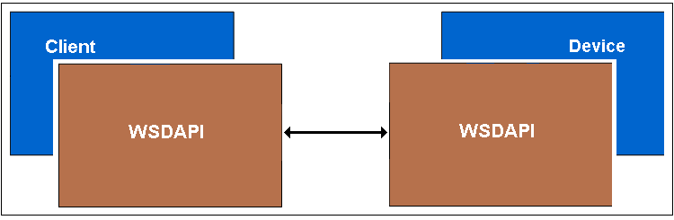
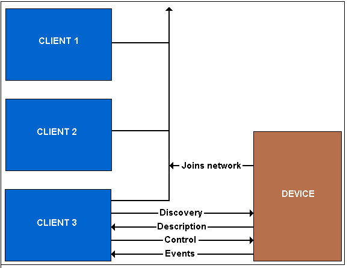

Web Service on Devices API (WSDAPI) is an implementation of the Devices Profile for Web Services (DPWS) for Windows Vista and Windows Server 2008. The DPWS constrains Web Services specifications so clients can easily discover devices. Once a device is discovered, a client can retrieve a description of services hosted on that device and use those services.
Devices are components, usually hardware, which are attached to the network. Examples include printers, Web cameras, and video systems.
Devices may include zero or more services. For example, a video device may include services that support power on and off, play control, media ejection, and video streaming. Play control may support actions such as play, pause, rewind, and fast forward.
WSDAPI extends the local Plug and Play model by allowing a client to discover and access a remote device and its associated services across a network. It supports discovery, one-way and two-way control messaging, and eventing.

DPWS devices announce their presence and expose services (if any) using a unique address and a standardized set of XML messages. DPWS clients can use the discovery process to find the device, enumerate its services, and connect to those services to perform specific actions.
A WSDAPI client first queries the device for complete descriptions of its services, including the service types (such as a printer service type or a scanner service type). The client then controls the device by calling commands defined by a service type (for example, by calling CreatePrintJob on a device with a printer service type). Optionally, the client can also monitor state changes in each service by subscribing to events that occur during command execution.

For more information about device messaging patterns, see Discovery and Metadata Exchange Message Patterns.
Logical addressing is used to uniquely identify devices independent of their physical addresses. WS-Discovery provides a mechanism to resolve logical addresses into physical addresses, allowing client-to-device messaging to take place. An example is network attached storage (NAS) that you carry with you. If you have a laptop and a NAS, your laptop should be able to recognize that it is the same device, regardless of the physical address (IP address) that the NAS obtains as you move between subnets. Accomplishing this requires the device have identity that is independent of the IP address it obtains; since traditional mechanisms like DNS are not available in a normal roaming scenario, WS-Addressing and WS-Discovery provide logical addressing and resolution as an ad-hoc alternative.
When a device is manufactured, it is given a globally unique identifier, represented as a UUID URI. This identifier will never change for the device. When the device is powered on, it will always announce its logical address via a WS-Discovery Hello message, and will accept requests to convert that to a physical address (typically HTTP) via WS-Discovery Resolve or Probe messages. Once a valid physical address (IP address) is obtained, all messaging happens over that address, and WS-Discovery is used only if the address changes, the device changes state and the clients need to be notified, or the device goes offline.
WSDAPI provides a generic DPWS SOAP stack for use by client and service applications. The Web Services on Devices Code Generator (WsdCodeGen.exe) can be used to convert a service description (WSDL) into proxy and stub code that applications can call directly. This generated code automatically transforms function calls and parameters into SOAP messages and XML fields, and then calls into WSDAPI to issue to requests to the remote device or client.
Function Discovery can be used when building WSDAPI applications to create and activate function instances returned by PnP. These function instances contain data that can be used to obtain more information through the PnP APIs when more than just simple discovery is required. For more information, see Function Discovery and PnP-X.
Discovery and Metadata Exchange Message Patterns
WSDAPI Specification Compliance
Overview of the WSDAPI Interfaces
Â
Â